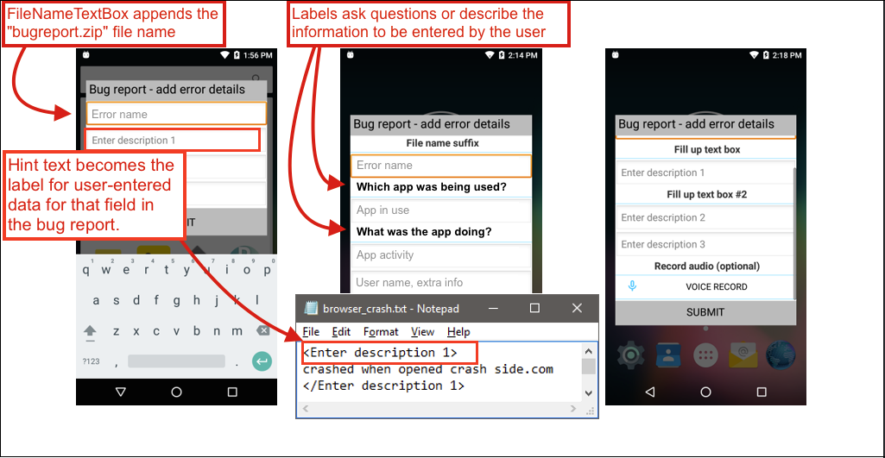

The Bug Report Manager (BugReportMgr) provides a framework for reporting the time, date and relevant technical data associated with perceived issues on Zebra mobile computers. Bug reports can be triggered programmatically through an intent or manually by an administrator or device user through a button on the "Power Off" Menu. Enabling USB debugging on the device is not required, but adds the ability to generate bug reports from the Settings panel and to enable/disable this function from the Power Off Menu. Reports can be stored in device flash (fixed or removable) in numbers limited only by available memory. In addition to local storage, reports also can be sent to a designated e-mail address and/or uploaded to the Zebra Cloud.
Key Facts
bugreport-YYYY-MM-DD-HH_MM.zipbugreport-YYYY-MM-DD-HH_MM.zip-user_entered_name.zipcom.symbol.mxmf.intent.START_FOR_BUG_REPORTStandard Android Bug Report.txt
The person using the device on which a bug has manifested can often provide useful information about getting to the root cause of the defect. The Bug Report Manager permits administrators to create a custom Dialog to accompany each bug report. This "questionnaire" appears when the bug report is generated, and should be designed to gather relevant information from the device user about activities that might have led to or caused the malfunction being reported. User-entered data is stored in a separate text file within the bugreport.zip.
The construction of a Dialog is cumulative; any number of text-entry fields and field labels can be added until the all desired questions are addressed.

Labels are static text fields used to ask a question or provide instructions for entering information into the blank text box immediately below it. For example, the Label above a text field intended to capture the activity that led to a crash might ask "What were you doing immediately before the error occurred?" Any number of labels can be added to a Dialog,
A test box Used to add one or more text fields to describe the issue being reported. The Text Box allows an administrator to include "hint" text to help guide the user toward the desired input (i.e. "Which app was being used?"). Hint text populates the otherwise blank text field (as shown above) and disappears the moment the user begins typing.
In the generated bug report, hint text becomes the label for data entered by the user in that field. It is therefore important to select hint text carefully. For example, while a hint such as "Your Name" would naturally be helpful to the user, hint text such as "Person reporting bug" might be more appropriate since it also would be meaningful to the person reading the report.
Note: Each new Dialog must begin with a ClearDialog Action and end with a LayoutEnd Action.